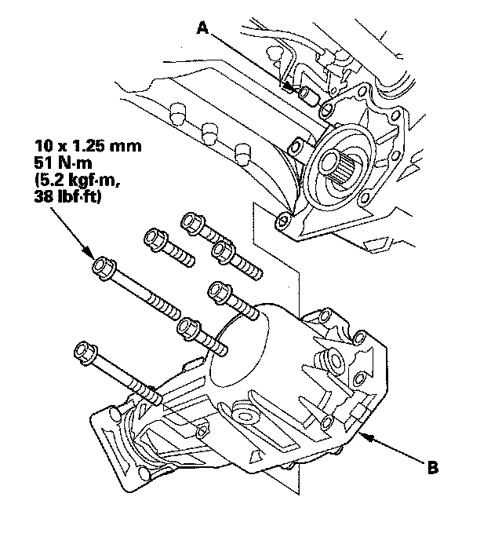
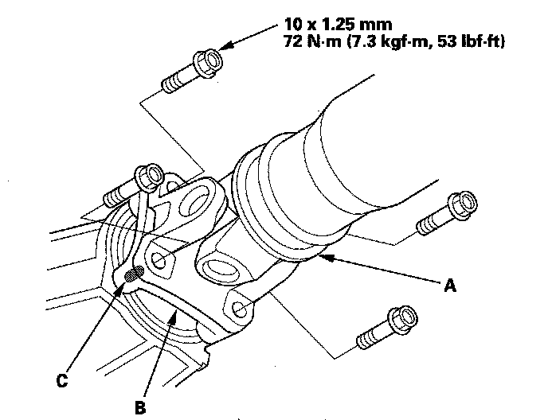
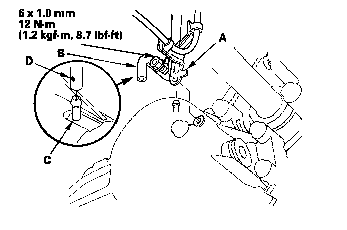
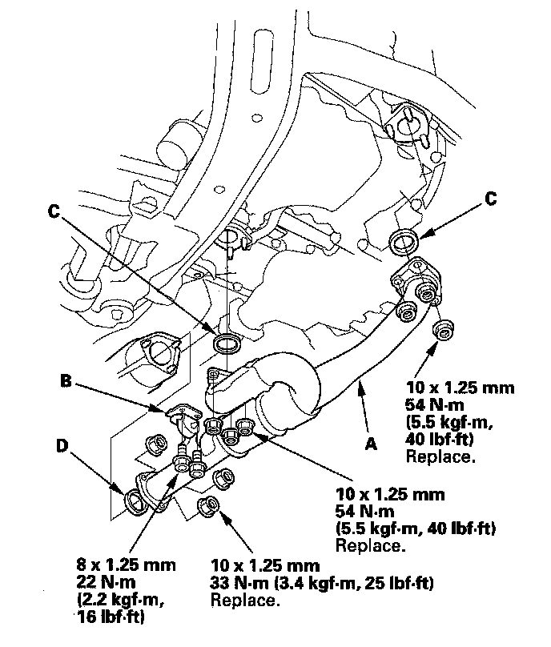
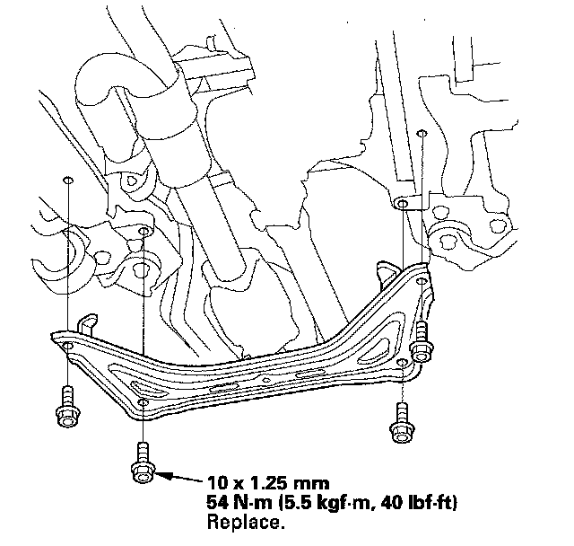
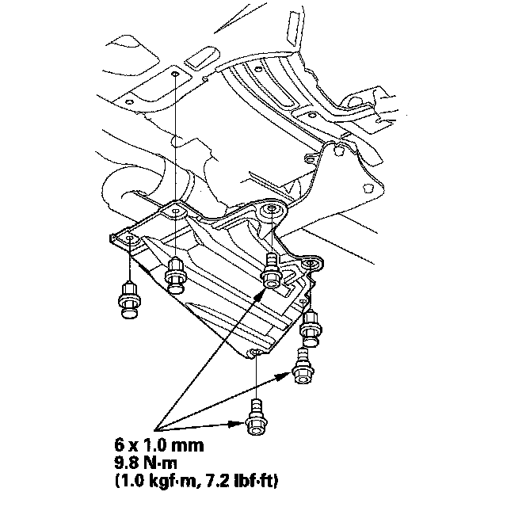

Transfer Assembly Installation
Transfer Assembly Installation1. Clean the areas where the transfer assembly contacts the transmission with solvent, and dry with compressed air. Then apply transmission fluid to the contact area.
2. Install the dowel pin (A) in the transmission, and install the transfer assembly (B) on the transmission.

3. Install the propeller shaft (A) to the transfer companion flange (B) by aligning the reference mark (C).

4. Secure the transfer breather hose bracket (A) on the transfer assembly with the bolt, and install the breather hose (B) over the breather pipe (C) with the dot (D) facing out.

5. Install the exhaust pipe A with the new self-locking nuts, its mount (B) and new gaskets (C) (D).

6. Install the front subframe stiffener with the new mounting bolts.

7. Refill the transfer with transfer fluid (hypoid gear oil) if necessary.
8. Refill the transmission with ATF.
9. Install the transmission undercover.
